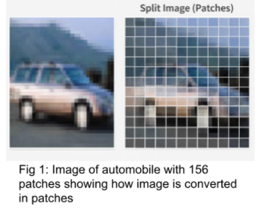
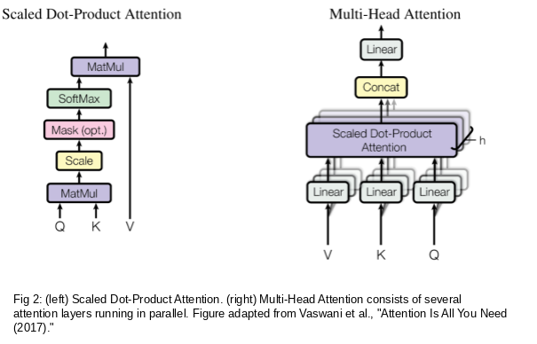
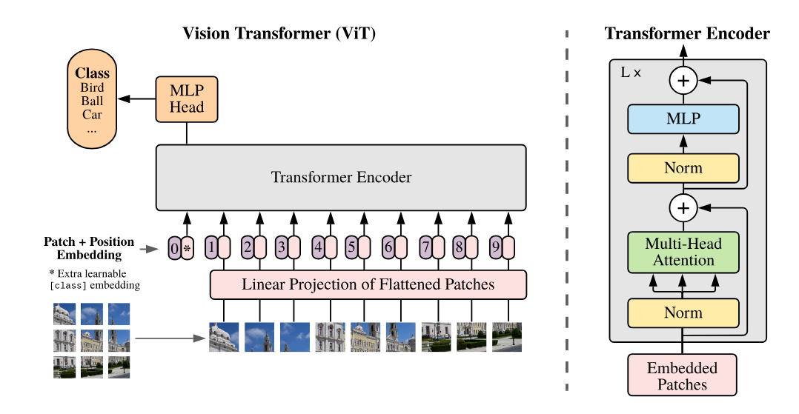

Transformers in Vision
Theory
Vision Transformers represent an important shift in computer vision by replacing convolution-based feature extraction with attention-based learning. Unlike Convolutional Neural Networks (CNNs), which mainly capture local patterns through convolutional filters and receptive fields, Vision Transformers model relationships among all regions of an image using the self-attention mechanism. This allows the model to capture both local visual details and global contextual information across the entire image.
A Vision Transformer processes an image through a sequence of stages. First, the image is divided into small fixed-size patches. These patches are then flattened and converted into patch embeddings. Positional embeddings are added to preserve spatial information, and the resulting token sequence is then passed through a stack of Transformer encoder blocks. Finally, the MLP head uses a classification token or a pooled representation to predict the output class.
The major stages in a ViT model are:
- Image patching
- Patch embedding
- Positional encoding
- Transformer encoder block
- Classification token and MLP classification head
I. Image Patching
Image patching is the first step in the Vision Transformer pipeline. In this process, an input image is divided into a set of fixed-size, non-overlapping square patches. Instead of processing the image as a whole, ViT treats each patch as an individual visual token, similar to how words are treated as tokens in natural language processing.
Each image patch is flattened into a one-dimensional vector and then passed through a linear projection layer to convert it into an embedding. These embedded patches form the input sequence for the Transformer encoder.
Figure 1 illustrates the patching process applied to an automobile image from the CIFAR-10 dataset. The original image is divided into smaller image regions, where each patch represents a localized visual component. These patches are later embedded and processed by the Transformer encoder to learn meaningful visual representations.

Figure 1. Original automobile image and its corresponding patch-wise representation.
II. Patch Embedding
After the image is divided into patches, each patch is flattened into a vector. However, the raw flattened patch vectors cannot be directly processed by the Transformer encoder. Therefore, each flattened patch is linearly projected into a fixed-dimensional embedding space.
If an image has dimensions , and each patch has size , then the number of patches is:
Each patch is flattened into a vector of size:
This vector is then projected into a -dimensional embedding space, where is the embedding dimension of the model. The output is a sequence of patch embeddings that serves as the input to the Transformer.
Since the Transformer architecture was originally designed for sequential data, it does not naturally understand the spatial arrangement of image patches. Therefore, positional embeddings are added to the patch embeddings to preserve information about each patch's location in the original image.
III. Positional Encoding in Vision Transformers
Transformer models process input tokens as a sequence but do not inherently understand the order or position of those tokens. For images, this becomes a major issue because the spatial arrangement of patches is essential for visual understanding. For example, the position of edges, shapes, and object parts strongly affects how an image is interpreted.
To solve this problem, Vision Transformers add positional embeddings to the patch embeddings. These positional embeddings provide information about the location of each patch in the original image. As a result, the model can distinguish patches that appear in different spatial positions.
In the original ViT architecture, learnable positional embeddings are commonly used. These embeddings are trained along with the rest of the model and help the Transformer learn spatial relationships among image patches. The classification token also receives its own positional embedding because it is included as part of the input token sequence.
The input to the Transformer encoder can therefore be represented as:
where is the learnable classification token, are the flattened image patches, is the linear projection matrix, and represents the positional embeddings.
There are two common types of positional encoding:
Learnable Positional Embeddings: In this approach, positional vectors are treated as trainable parameters. The model learns the most suitable positional representation during training. This is the approach used in the original ViT model.
Fixed Sinusoidal Positional Embeddings: Fixed sinusoidal positional encoding was originally used in the Transformer architecture for natural language processing. It uses sine and cosine functions to encode position information in a deterministic way. The encoding is given as:
where is the token position, is the dimension index, and is the embedding dimension. Even dimensions use sine functions, while odd dimensions use cosine functions. This type of encoding is fixed, deterministic, and does not require additional learnable parameters.
IV. Self-Attention Mechanism
The self-attention mechanism is the central component of the Vision Transformer. It allows each image patch to interact with every other patch in the image. This is different from convolutional operations, which typically focus on local neighborhoods. Through self-attention, the model can capture long-range dependencies and global relationships across the entire image.
For each input token, three vectors are generated using learned linear projections:
- Query (Q): represents what a token is looking for
- Key (K): represents what information a token provides
- Value (V): represents the actual content of the token
The attention score between tokens is calculated using the dot product between the query and key vectors. These scores indicate how strongly one token should attend to another. The scaled dot-product attention is computed as:
where is the dimension of the key vectors. The division by prevents the dot-product values from becoming too large, which helps avoid softmax saturation and stabilizes training.
The softmax operation converts the attention scores into normalized attention weights. These weights are then multiplied by the value vectors to produce a weighted combination of information from all tokens. In this way, each patch token is updated based on its relationship with every other patch in the image.
V. Multi-Head Self-Attention
Instead of using a single attention operation, Vision Transformers use Multi-Head Self-Attention. Multi-head attention allows the model to learn different types of relationships among image patches simultaneously. For example, one attention head may focus on local texture, another may focus on object shape, while another may capture global structure.
A single attention head can only learn one type of attention pattern at a time. Multi-head attention overcomes this limitation by running several attention operations in parallel. Each head works in a lower-dimensional representation space, and the outputs of all heads are later combined.
The multi-head attention operation is expressed as:
where each attention head is computed as:
Here, , , and are learned projection matrices for the query, key, and value vectors of the -th attention head. is the final output projection matrix that combines the outputs of all attention heads.
As shown in Figure 2, the input tokens are first projected into Query, Key, and Value vectors. These projections are then divided into multiple parallel attention heads. Each head independently applies scaled dot-product attention. The outputs from all heads are concatenated and passed through a final linear layer. This enables the model to learn richer and more diverse visual representations than a single attention head.

Figure 2. Scaled dot-product attention and multi-head attention architecture. The left diagram shows scaled dot-product attention, while the right diagram shows multi-head attention, where multiple attention heads operate in parallel, followed by concatenation and a final linear projection. Source: Vaswani et al., "Attention Is All You Need" (2017).
VI. Residual Connections and Layer Normalization
Each Transformer encoder block uses residual connections and layer normalization to improve training stability and information flow.
Residual connections, also called skip connections, add the input of a sub-layer back to its output. This helps preserve information from earlier layers and reduces the risk of gradient degradation in deep networks. Instead of forcing each layer to learn a completely new representation, residual connections allow the model to learn refinements over the previous representation.
Layer normalization is used to stabilize the training process. It normalizes the token features across the embedding dimension, helping maintain well-conditioned gradients and reducing instability during optimization. In modern Vision Transformers, Layer Normalization is commonly applied before the self-attention and MLP sub-layers. This is known as the Pre-LN formulation.
Together, residual connections and layer normalization allow Vision Transformers to be trained effectively even when multiple encoder layers are stacked deeply.
VII. Classification Token
A learnable classification token, commonly called the CLS token, is added to the beginning of the patch embedding sequence before it enters the Transformer encoder. Unlike patch tokens, the CLS token does not correspond to any specific region of the image. Instead, it is a trainable vector that learns to collect global information from all image patches.
As the token sequence passes through the Transformer encoder, the CLS token attends to all patch tokens through the self-attention mechanism. Gradually, it aggregates information from the entire image. After the final encoder layer, the output representation of the CLS token is passed to the MLP classification head, which produces the final class prediction.
This idea is similar to the CLS token used in BERT for natural language processing. However, in Vision Transformers, the CLS token summarizes visual information rather than textual information.
Some ViT variants use global average pooling instead of a CLS token. In that approach, the final representations of all patch tokens are averaged to obtain a single image-level representation. Both methods are valid, but the original ViT architecture uses the CLS token for classification.
VIII. Model Architecture of Vision Transformer
The Vision Transformer architecture begins by dividing an image into fixed-size patches. Each patch is flattened and projected into an embedding space using a linear projection layer. Positional embeddings are then added to the patch embeddings, allowing the model to retain spatial information about the original image structure.
A learnable CLS token is prepended to the sequence, and the complete sequence is passed through a stack of Transformer encoder blocks. Each encoder block consists of Multi-Head Self-Attention, residual connections, Layer Normalization, and a position-wise Multilayer Perceptron.
Although the Transformer encoder structure is similar to that used in natural language processing, the key difference is that ViT processes image patches instead of word tokens. This allows the Transformer architecture to be applied directly to visual data.
In the original ViT model proposed by Dosovitskiy et al., the ViT-Base configuration uses an embedding dimension of . It contains Transformer encoder layers and attention heads. Larger ViT variants increase the embedding dimension, number of layers, and number of attention heads to improve model capacity.
Fig. 3 shows the overall ViT architecture. The image is first converted into patch embeddings, positional information is added, and the resulting sequence is processed through Transformer encoder layers. The final CLS token representation is then used for classification.

Figure 3. Overview of the Vision Transformer architecture. Source: Dosovitskiy et al., An Image is Worth 16×16 Words (2021). The Transformer encoder structure is based on the original Transformer architecture introduced by Vaswani et al., Attention Is All You Need (2017).
IX. Transformer Encoder Block
Each Vision Transformer encoder block applies two main operations to the input token embeddings. The first operation is Multi-Head Self-Attention, and the second is a position-wise MLP. Both operations are combined with residual connections and Layer Normalization.
In the Pre-LN formulation, the first step applies Layer Normalization followed by Multi-Head Self-Attention:
The second step applies Layer Normalization, followed by the MLP:
where is the input to the -th encoder block, is the intermediate output after self-attention, and is the final output of the encoder block.
The MLP sub-layer usually consists of two fully connected layers with a GELU activation function between them. In the original ViT architecture, the hidden dimension of the MLP is typically four times larger than the embedding dimension:
The Multi-Head Self-Attention module captures global dependencies among image patches, while the MLP independently refines each token's representation. Residual connections preserve earlier information, and Layer Normalization stabilizes training. Together, these components form the standard Transformer encoder block used in Vision Transformers.
X. Working of the ViT Encoder
The working of the Vision Transformer encoder can be summarized in three main stages.
First, the image is divided into fixed-size patches. Each patch is flattened and projected into a token embedding. A CLS token is added at the beginning of the sequence, and positional embeddings are added to retain spatial information.
Second, the token sequence is passed through a stack of Transformer encoder blocks. Each block applies Layer Normalization, Multi-Head Self-Attention, residual addition, another Layer Normalization, an MLP, and another residual addition. This process is repeated for layers, such as 12 layers in ViT-Base.
Finally, after all encoder blocks have processed the token sequence, the final representation of the CLS token is extracted. This representation contains global image-level information and is passed to the MLP classification head to predict the final class label.
Because Vision Transformers do not have the same inductive biases as CNNs, such as local connectivity and translation equivariance, they usually require large amounts of training data when trained from scratch. For this reason, pretrained ViT models are often fine-tuned on smaller datasets such as CIFAR-10 to achieve strong performance with limited data.
XI. Summary of Core Components
| Component | Purpose | Key Insight |
|---|---|---|
| Patch Embedding | Converts image patches into token vectors. | Bridges the image data and the transformer input format. |
| CLS Token | Aggregates global image representation. | Enables classification without spatial pooling. |
| Positional Encoding | Adds spatial location information to patch tokens. | Introduces spatial awareness without convolution. |
| Self-Attention | Captures relationships between all patch tokens. | Enables global contextual understanding. |
| Multi-Head Attention | Learns multiple relation types in parallel. | Captures diverse visual features simultaneously. |
| MLP / Feed-Forward Network | Applies a nonlinear transformation per token. | Enhances per-token representation depth. |
| Residual + Layer Norm | Stabilizes training and gradients. | Enables deep stacking without degradation. |
XII. Use Cases of Vision Transformers
Vision Transformers have been successfully applied across a wide range of computer vision tasks:
Image Classification: ViT was originally proposed for image classification and achieved highly competitive performance when pretrained on large-scale datasets such as ImageNet-21k and JFT-300M.
Object Detection: Transformer-based detectors such as DETR formulate object detection as a direct set-prediction problem. DETR combines a CNN backbone with a Transformer encoder-decoder and learned object queries, enabling end-to-end object detection without hand-designed anchor boxes.
Semantic and Instance Segmentation: Models such as SegFormer and Mask2Former adapt Transformer-based architectures for pixel-level prediction tasks using specialized decoder heads. These models are effective because self-attention captures global spatial context, which is useful for understanding object boundaries and scene layout.
Medical Image Analysis: ViTs have been applied to histopathology, radiology, and ophthalmology, where modeling long-range spatial relationships across images, scans, or whole-slide images can be valuable.
Video Understanding: By extending image patches across the temporal dimension, ViT variants such as TimeSformer process videos as sequences of spatiotemporal patches.
Multi-Modal and Generative Tasks: ViT-based encoders are used in multi-modal models such as CLIP, where image and text representations are aligned in a shared embedding space. In generative AI, Transformer-based and ViT-inspired architectures have also influenced modern image-generation systems, although models such as Stable Diffusion primarily use latent diffusion with U-Net-based denoising and CLIP-based text conditioning.
XIII. Merits of Vision Transformers:
Ability to model global context: Self-attention connects every patch to every other patch, enabling ViTs to capture long-range spatial dependencies that CNNs cannot model directly.
Resolution flexibility: Unlike CNNs with fixed kernel sizes, ViTs can be adapted to different input resolutions by adjusting the number of patches.
Strong transfer learning: When pretrained on large datasets (e.g., ImageNet-21k or JFT-300M), ViTs fine-tune effectively on smaller datasets, achieving competitive or superior accuracy to CNNs.
Interpretability: Attention maps provide a natural way to visualize which image regions the model focuses on when making a prediction, offering greater transparency than CNN feature maps.
XIV. Demerits of Vision Transformers:
High computational cost: The self-attention operation scales quadratically with the number of patches (O(N²)), making ViTs computationally expensive for high-resolution images.
Data hungry: Due to the lack of CNN-style inductive biases (local connectivity, translation equivariance), ViTs require substantially more training data to learn effective representations from scratch.
Slower convergence on small datasets: Without pretraining, ViTs typically underperform CNNs on datasets with fewer than ~100,000 images, as CNNs benefit from their built-in spatial priors.